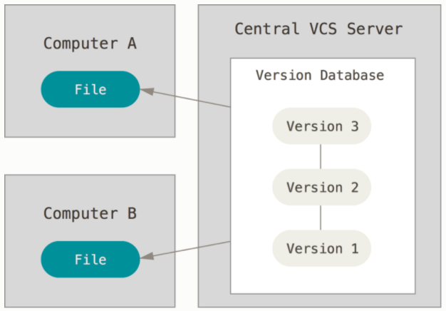
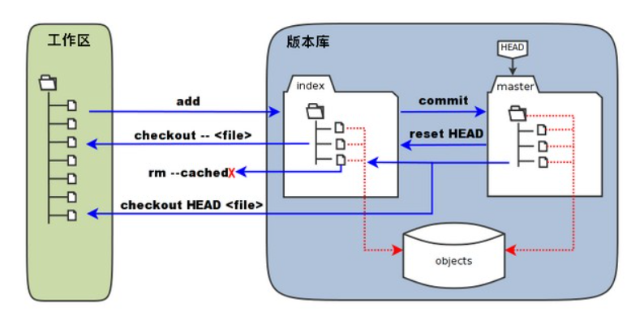
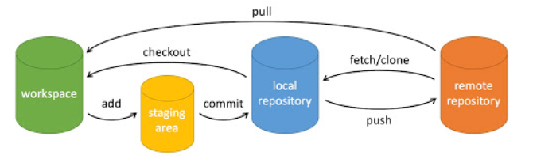
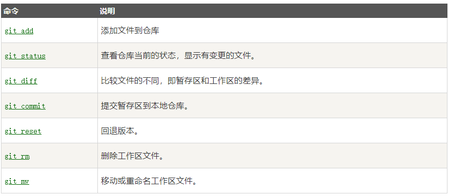
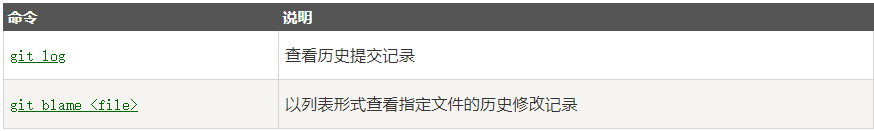
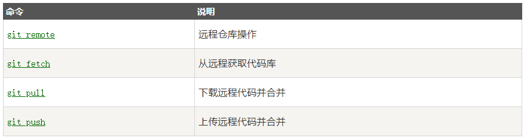
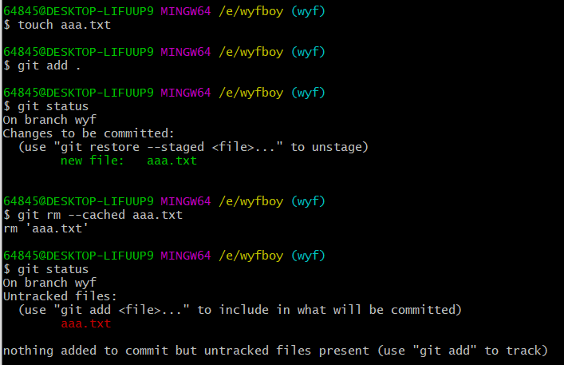
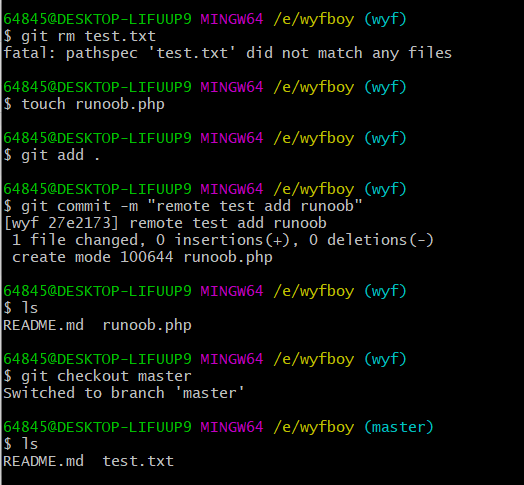
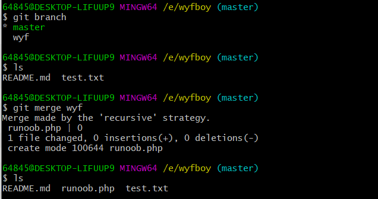

Git基本概念
集中式和分布式的版本控制系统的比较
- 集中式的版本控制（CVCS），中央服务器作为协同工作的版本控制系统，可以让在不同系统上的开发者协同工作。但是若中央服务器宕机一小时，那么在这一小时内，谁都无法提交更新，也就无法协同工作。

- 分布式版本控制系统（DVCS），客户端并不只是提取到最新版本的文件快照，而是把代码仓库完整的镜像下来，包括完整的历史记录。这么一来，任何一处协同工作的服务器发生故障，事后都可以用任何一个镜像出来的本地仓库恢复。因为每一次的克隆操作，实际上都是一次对代码仓库的完整备份。
Git基本概念
- 工作区：在电脑中能看到的目录。
- 暂存区：一般放在
.git目录下的index文件（.git/index）中。 - 版本库：工作区有一个隐藏目录
.git，这个不算工作区，而是Git的版本库。

- “index”标记的为暂存区，“master”标记的为master分支所代表的目录树
- 当对工作区修改（或新增）的文件执行
git add命令时，暂存区的目录树被更新，同时工作区修改（或新增）的文件内容被写入到对象库中的一个新对象中，而该对象的ID被记录在暂存区的文件索引中。 - 当执行提交操作
git commit时，暂存区的目录树写到版本库中，master分支会做相应的更新。即master指向的目录树就是提交时暂存区的目录树。 - 当执行
git reset HEAD命令时，暂存区的目录树会被重写，被master分支指向的目录树所替代，但是工作区不受影响。 - 当执行
git rm --cached <file>命令时，会直接从暂存区删除文件，工作区则不会做出改变。 - 当执行
git checkout .或者git checkout -- <file>命令时，会用暂存区全部或指定的文件替换工作区的文件。这个操作很危险，会清除工作区中未添加到暂存区的改动。 - 当执行
git checkout HEAD .或git checkout HEAD <file>命令时，会用HEAD指向的master分支中的全部或者部分文件替换暂存区和工作区中的文件。这个命令也是极具危险的，因为不仅会清除工作区的未提交的改动，也会清除暂存区中未提交的改动。
Git创建仓库
git init
使用当前目录作为Git仓库，我们只需使它初始化。
1 | git init |
该命令执行完后会在当前目录生成一个.git目录。
使用我们指定目录作为Git仓库。
1 | git init newrepo |
初始化后，会在newrepo目录下出现一个名为.git的目录，所有Git需要的数据和资源都存放在这个目录中。如果当前目录下有几个文件想要纳入版本控制，需要先用git add命令告诉Git开始对这些文件进行跟踪，然后提交：
1 | $ git add *.c |
以上命令将目录下以.c结尾及README文件提交到仓库中。
git clone
克隆仓库的命令格式:
1 | git clone <repo> |
克隆到指定的目录：
1 | git clone <repo> <directory> |
可以使用不同的协议克隆，其中最常见的是ssh，因为速度较快，还可以配置公钥免输入密码：
1 | git clone git@github.com:fsliurujie/test.git --SSH协议 |
配置
使用git config命令配置git
1 | $ git config --list |
编辑git配置文件
1 | $ git config -e #针对当前仓库 |
设置提交代码时的用户信息：
1 | $ git config --global user.name "wyfboy" |
如果去掉**–global**参数，只会对当前仓库有效。
Git基本操作

- workspace：工作区
- staging area：暂存区/缓存区
- local repository：版本库或本地仓库
- remote repository：远程仓库
提交与修改

提交日志

远程操作

Git分支管理
创建分支命令：
1 | git branch (branchName) |
切换分支命令：
1 | git checkout (branchName) |
切换分支时，Git会用该分支的最后提交的快照替换你的工作区目录的内容，所以多个分支不需要多个目录。
列出分支命令：
1 | git branch |
合并分支命令：
1 | git merge <branchName> |
一旦某分支有了独立的内容，可以使用以上命令将任何分支合并到当前主分支中，合并完后就可以删除分支了。
删除分支命令：
1 | git branch -d (branchName) |
合并冲突：
1 | $ git status -s |
测试：
以下操作把README.md添加版本控制，这样在每个分支上都会看到
1 | 64845@DESKTOP-LIFUUP9 MINGW64 /e/wyfboy (master) |
以下操作将add进暂存区的文件删除：

在wyf分支上移除了一个文件test.txt并添加了一个文件runoob.php，但我们切换回master分支，发现test.txt又回来了，并且新增的runoob.php不在主分支上。
这样使用分支将工作切分开来，从而让我们在不同的开发环境中做事，并来回切换。

将wyf分支合并到主分支上去，这样wyf分支中的runoob.php将会到master分支上,并且test.txt被删除。合并后，wyf分支就可以删除了：
